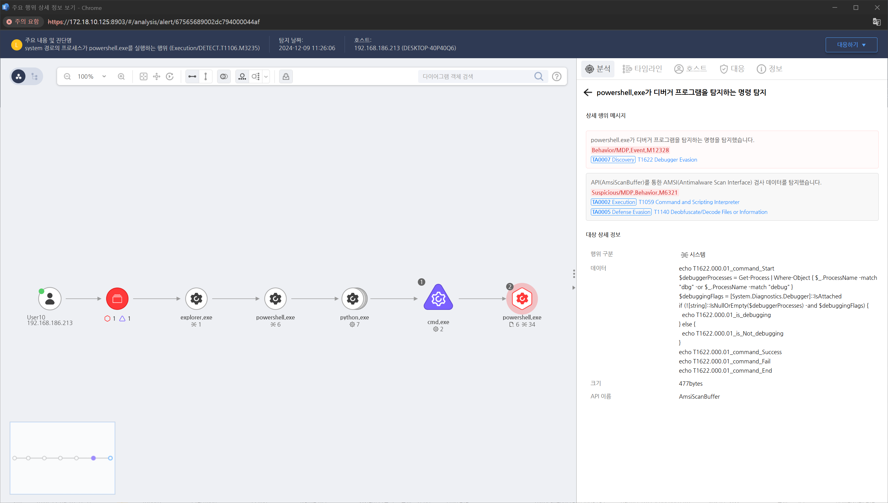

MITRE ATT&CK 액션을 기준으로 대응 방안을 작성
powershell.exe가 디버거 프로그램을 탐지하는 명령을 탐지합니다.

WMI 쿼리 실행이 있을 때 Event ID 5858 이벤트가 기록됩니다. 쿼리 실행이 의심스러울 경우 이를 분석하여 WMI를 통해 Office 응용 프로그램을 실행하려는 시도를 탐지합니다.
PowerShell에서 Get-WmiObject 또는 Invoke-WmiMethod와 같은 WMI 명령어가 사용되었는지 추적합니다. WMI를 통한 명령 실행을 모니터링하려면 PowerShell 스크립트 블록 로깅을 활성화합니다.
SIEM 도구에서 WMI 쿼리나 PowerShell을 통한 의심스러운 활동을 실시간으로 모니터링하여 경고를 생성하고 Splunk 또는 Microsoft Sentinel에서 "wmic" 또는 "Get-WmiObject"를 포함한 명령을 추적하여 의심스러운 명령을 탐지합니다.
Sysmon에서 Event ID 20을 사용하여 WMI와 관련된 활동을 기록하고 모니터링할 수 있습니다. WMI를 통해 Office 응용 프로그램이 시작되는 이벤트를 추적할 수 있습니다.
WMI 권한 최소화
WMI 쿼리 및 이벤트 모니터링
매크로 보안 강화
Windows Defender 및 EDR(Endpoint Detection and Response) 활용
AppLocker 사용
PowerShell 스크립트 실행 제한
스크립트 차단
Action 실행시 함께 영향을 받는 다른 Techniqes
| ATT&CK |
|---|
| T1622 |
| D3FEND |
|---|
| D3-FIM File Integrity Monitoring |
| D3-PLA Process Lineage Analysis |
| D3-DA Dynamic Analysis |
| D3-EFA Emulated File Analysis |
| D3-PM Platform Monitoring |
| D3-PSA Process Spawn Analysis |